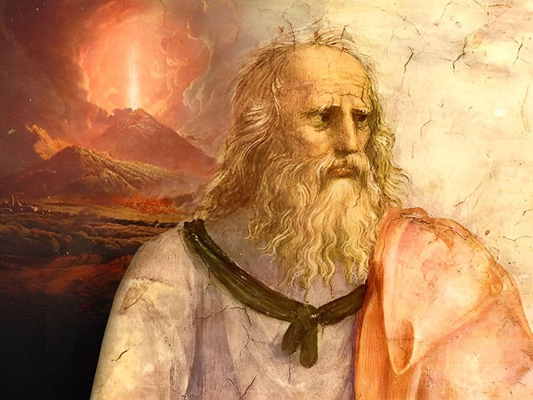
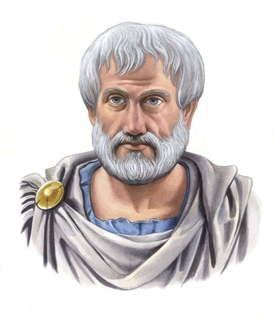

PLATO
Plato defined philosophy as the passionate search for true knowledge,wisdom, understanding of the eternal,unchanging reality (the Forms) rather than the mere sensory perception of the physical world.

ARISTOTLE
Aristotle defined philosophy as the rational,systematic pursuit of knowledge rearding the fundamental causes,principles,and nature of reality,emcompassing everything from metaphysics to ethics.

IMMANUEL KANT
Immanuel Kant defined philosophy not as a mere science of concepts,but as a critical,rational, inquiry into the nature of human knowledge,morality,and freedom.